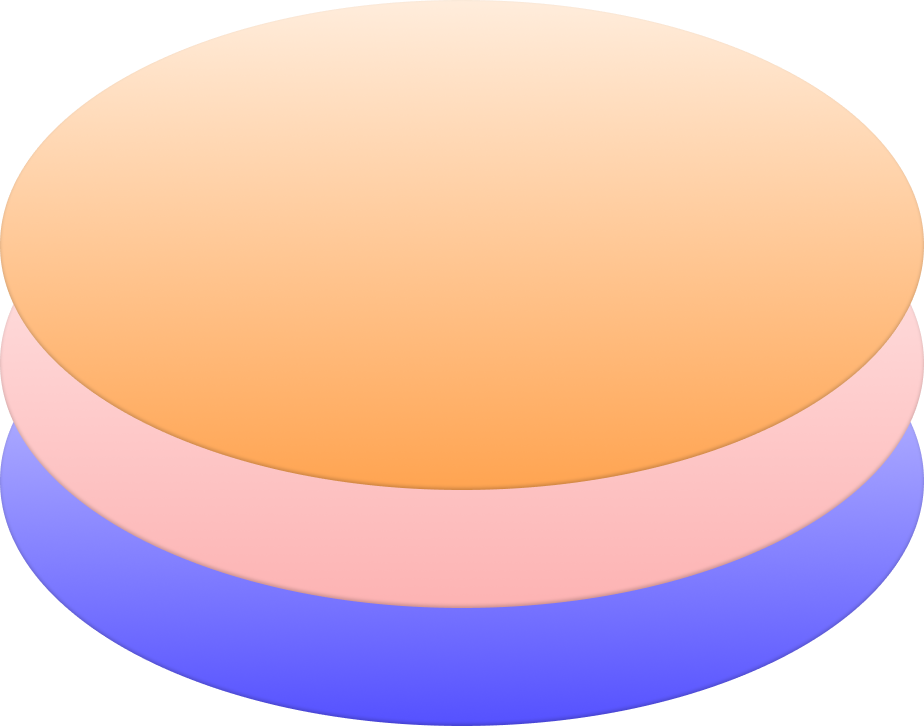

MUON IS NOW
An elementary node layer to decentralized systems.
Muon
/mjuːɒn/
( from the Greek letter mu (μ) used to represent it)
Muon is a decentralized Nodes as a service Network that enables running Web2 and Web3
applications, off-chain,
on-chain, and cross-chain.
Our elementary node layer allows smart contracts to securely perform complex computations in
common programming
languages at zero gas cost.
Building oracles and cross-chain bridges through secure off-chain computation has never been
as easy and secure.
Combined with other blockchains, Muon is the ultimate decentralized trustable world-computer
“Imagine the ideal protocol. It would have the most trustworthy third party imaginable — a deity who is on everybody’s side. All the parties would send their inputs to God. God would reliably determine the results and return the outputs.
God being the ultimate in confessional discretion, no party would learn anything more about
the other
parties’ inputs than they could learn from their own inputs and the output.”
Nick Szabo - 1997
Muon
The Future of Interoperability and Instantaneous Data Access
Muon natively connects all applications on all chains with the off-chain world. Muon fills the
gaps between different
networks through a sonar-like system of decentralized autonomous nodes, which can speak and
understand any language.
Muon nodes communicate, read and transmit data to any chain quickly, efficiently, and securely. Building oracles, bridges, or off-chain workers has never been as simple, decentralized, and secure as it is with Muon.
Muon nodes communicate, read and transmit data to any chain quickly, efficiently, and securely. Building oracles, bridges, or off-chain workers has never been as simple, decentralized, and secure as it is with Muon.
μPythia
Pioneering Supercharged Oracle Tech Built with Muon
Connecting blockchain to external data sources is effortless, thanks to Muon’s elementary
layer-0
nature. On the right
is a demo application of a Muon-based oracle called “μPythia”.
Developed in 14 days by our core team as a showcase of Muon’s velocity, “μPythia” can generate production-ready signatures in under 300 milliseconds. Faster than any other blockchain-based oracle solution, it’s already being used in production by DEUS Finance.
Developed in 14 days by our core team as a showcase of Muon’s velocity, “μPythia” can generate production-ready signatures in under 300 milliseconds. Faster than any other blockchain-based oracle solution, it’s already being used in production by DEUS Finance.
Live μPythia demo:
init.pythia
Live oracle showcase, try it out by typing TSLA into the console*
only during NYSE Stock trading hours*
-
Trust
Following a web3 request and data claim, the subsequent verification process begins. The Muon network nodes will internally verify the data that the oracle has signed and unlock node collateral, if there are no disputes.
-
Speed
As soon as the user requests data in a dApp, an HTTPs demand is sent to the Muon Node network. Almost immediately [~300ms] the user receives a response, with signatures, which merges with their transaction into a message, on any EVM chain, verifiable by the smart contract.
-
Composability
Application classes are predefined, and every app can customize its class for the fully immersive dApp solution on any chain. Muon is a fully customizable layer-0 solution and entirely chain-agnostic.
Muon SDK
A Muon JS library will be provided for developers to implement Muon into
their DApps with ease.
This will enable developers to use Muon’s decentralized nodes as a service.
First off the blocks, DEUS Finance has already built a Muon-based oracle for providing live stock prices.
First off the blocks, DEUS Finance has already built a Muon-based oracle for providing live stock prices.

Muon
A decentralized node network.
Muon nodes run on a proof of stake like consensus & can have one or several roles.
Collateralized nodes sign data and
push it to the blockchain. Other nodes observe the data on blockchains and place disputes
wherever they see anomalies.
Nodes can also take a hosting role and use IPFS to save the data, or even operate as a decentralized cloud computer.
Nodes can also take a hosting role and use IPFS to save the data, or even operate as a decentralized cloud computer.
Limitless opportunities of Muon Protocol
-
μRC20 tokensA new μRC20 token standard. μRC20 tokens exist on multiple chains with their balances and transactions being saved on all chains simultaneously.
Muon nodes synthesize all the data from all chains before allowing a transaction to run or fail. -
High-level AppsMuon protocol allows high-level apps, built in Java or Python, to run in a decentralized manner and to push their final data to blockchain.
An instance would be enabling machine learning strategies using AI for DeFi dApps that push their data to blockchains.
Imagine having machine learning algorithms empowering yield aggregators like yearn.finance in a decentralized and secure way. -
Lightning NetworksSimilar to Bitcoin’s lightning network, Muon merges small transactions and pushes data to blockchains periodically or upon request. This enables fast, low-cost payment solutions that are decentralized and secure with their data on blockchains.
Muon can also be a base layer protocol, where Layer-2 solutions are able to proliferate.
Muon Token
Muon token is the building block of the entire ecosystem and acts as a vehicle of service.
Muon token will be the first implementation of the μRC20 token standard. It will exist on multiple chains with its balances and transactions being saved simultaneously on all chains.
Muon nodes check user balances spanning the chains before allowing a transaction to run or fail.
Muon token covers the transaction and infrastructure cost to nodes. It is sent along with the request for data to pay the node for verifying that data.
Muon token will be the first implementation of the μRC20 token standard. It will exist on multiple chains with its balances and transactions being saved simultaneously on all chains.
Muon nodes check user balances spanning the chains before allowing a transaction to run or fail.
Muon token covers the transaction and infrastructure cost to nodes. It is sent along with the request for data to pay the node for verifying that data.

Muon Token use case
Muon token covers both the insurance and the infrastructure cost of the nodes.
The transaction fee is used primarily to pay for the insurance of the node’s stake, which is used to verify the transaction, and also for the actual node infrastructure.
The amount sent is divided between the nodes that process the transaction.
The Muon protocol aims to be a low-cost, decentralised infrastructure, similar to AWS, rather than a common, expensive blockchain infrastructure.
The transaction fee is used primarily to pay for the insurance of the node’s stake, which is used to verify the transaction, and also for the actual node infrastructure.
The amount sent is divided between the nodes that process the transaction.
The Muon protocol aims to be a low-cost, decentralised infrastructure, similar to AWS, rather than a common, expensive blockchain infrastructure.
Token Distribution
after three years
- 10% Seed Round
- 15% Private Sale
- 15% Liquidity + Liquidity Incentives
- 34% Ecosystem Incentives
- 15% Team
- 6% Partners & Advisors
- 5% Marketing
Token Release Schedule
PRESALE
The Seed round for Partners and Strategic Investors is currently ongoing.
Private Sales will be open to the DEUS Finance and DAO Maker communities, as well as Muon
whitelist applicants.
Total Hardcap: $2,940,000
Thereafter, an LGE will be held in addition to a centralized exchange listing.
Get Whitelisted →
| # | Round | Price | Muon available | Status | Hardcap |
|---|---|---|---|---|---|
| 1 | Seed | $0.05 | 12,000,000 |
Closed
|
$600,000 |
| 2 | Private Sale | $0.095 | 18,000,000 |
Ongoing
|
$1,710,000 |
Scroll horizontally to see the rest
Roadmap
May
- Finalizing Oracle prototype
- Releasing Pitch Deck
- Preparing Open source stock api (50k+)
- Onboarding Strategic partnerships
- Settling Technical Overview and Lite paper
- Adding Muon Gitbook to the website
- Securing seed round for strategic investors
◐ IN PROGRESS
June
- Releasing SDK & platform to strategic projects for a closed beta test
- Integrating Muon-based oracle Pythia in DEUS Finance
- Offering Muon Private Sale to multiple communities
- TGE with incentives to engaged communities
- Exchange listing for public launch
- Liquidity Generation Event on Uniswap
→ SOON
Q3 2021
- Releasing Muon SDK to onboard first projects
- Onboarding initial beta testers
- Launching Muon node client for beta testers
- Launching Mainnet beta with decentralized node network
→ SOON
Q4 2021
- Node client available to everyone to help secure the Muon Protocol
- Develop a 3X leverage token (in collaboration with DEUS Finance)
- Releasing of a crosschain YieldFarming contract for DEUS Finance (first merged dApp prototype)
- Launch a trustless bridge for DEUS Finance
→ SOON